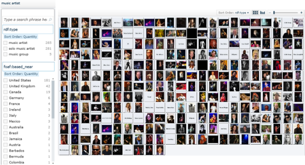

The Information Workbench, which we saw earlier, is one tool that can provide faceted search over a dataset. Facets are derived from the properties used to describe the resources returned from the search query. From within each facet, the user can select the values. In the figure below the location facet (using the foaf:based_near property) allows the user to drill down to artists (represented as images) from a particular county. The values of the property are sorted according to frequency, therefore giving a higher rank to values that identify the largest number of resources.
Movie 5: An introduction to faceted search and the challenges associated with supporting faceted search.
If the facets are largely independent (i.e. do not demark the same subsets of resources) then a small set of facets can be used to filter quickly a large dataset to a small number of items of interest.

Figure 47: Faceted search using the Information Workbench.
An interesting challenge when supporting faceted search is determining which of the potentially large number of facets to prioritize in the interface. This can be a particular problem with heterogeneous data, typical of Linked Open Data, where different properties (and therefore facets) apply to different parts of the dataset. Addressing this challenge involves not only prioritizing facets that have good coverage of the resources of interest but also have values that discriminate between them. Facets having values that split the resources into subsets of similar size would then be optimal for filtering.
As the most appropriate facets depend on the properties and values of the resources of interest, they can be expected to change if keyword search is used to select an initial set of resources for faceted browsing.
Another challenge is the real time computation of previews [24]. With a large dataset it can be computationally too expensive to calculate the frequencies for all values of all facets. Counts then need to be predicted from a sample giving the user an indication of what they can expect.